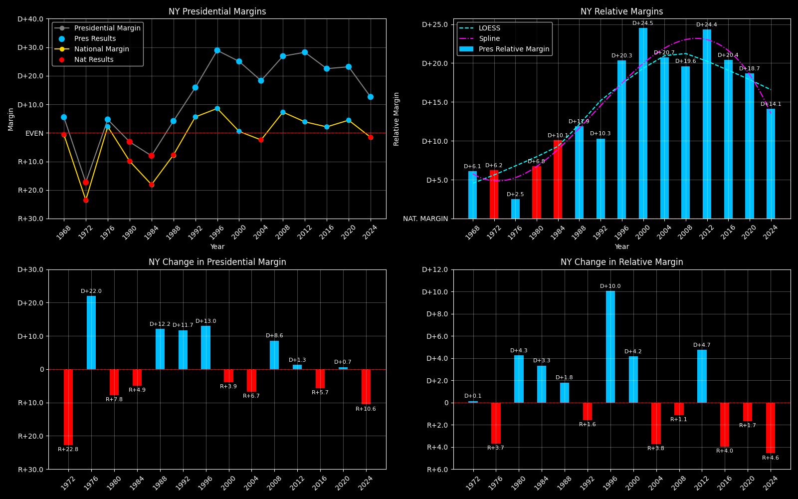

← Back to Map

New York (NY) statewide
New York (NY) — Data
| Year | EVs | D | R | Margin | Rel. Margin | Nat. Margin | 2-Party Margin | Margin Δ | Rel. Margin Δ | Nat. Margin Δ | 2-Party Margin Δ | Other votes | Total votes |
|---|
| 1968 | 43 | 3,371,127(50.1%) | 3,001,838(44.6%) | D+5.5 | D+6.1 | R+0.6 | D+5.8 | | | | | 359,362(5.3%) | 6,732,327 |
| 1972 | 41 | 2,948,523(41.3%) | 4,184,177(58.7%) | R+17.3 | D+6.2 | R+23.5 | R+17.3 | R+22.8 | D+0.1 | R+23.0 | -0.23118408790519082 | 0(0.0%) | 7,132,700 |
| 1976 | 41 | 3,395,557(52.3%) | 3,090,789(47.7%) | D+4.7 | D+2.5 | D+2.2 | D+4.7 | D+22.0 | R+3.7 | D+25.7 | 0.2202239886068571 | 0(0.0%) | 6,486,346 |
| 1980 | 41 | 2,719,555(44.6%) | 2,910,931(47.7%) | R+3.1 | D+6.8 | R+9.9 | R+3.4 | R+7.8 | D+4.3 | R+12.1 | -0.0809753349684308 | 467,177(7.7%) | 6,097,663 |
| 1984 | 36 | 3,157,349(46.0%) | 3,708,344(54.0%) | R+8.0 | D+10.1 | R+18.1 | R+8.0 | R+4.9 | D+3.3 | R+8.2 | -0.04626411924596325 | 0(0.0%) | 6,865,693 |
| 1988 | 36 | 3,349,098(52.1%) | 3,082,576(47.9%) | D+4.1 | D+11.9 | R+7.7 | D+4.1 | D+12.2 | D+1.8 | D+10.4 | 0.12169234831338432 | 0(0.0%) | 6,431,674 |
| 1992 | 33 | 3,444,450(50.1%) | 2,351,808(34.2%) | D+15.9 | D+10.3 | D+5.6 | D+18.9 | D+11.7 | R+1.6 | D+13.3 | 0.14706919359055173 | 1,085,562(15.8%) | 6,881,820 |
| 1996 | 33 | 3,755,984(59.5%) | 1,932,894(30.6%) | D+28.9 | D+20.3 | D+8.6 | D+32.0 | D+13.0 | D+10.0 | D+3.0 | 0.13195748045730327 | 620,939(9.8%) | 6,309,817 |
| 2000 | 33 | 4,113,568(60.2%) | 2,405,675(35.2%) | D+25.0 | D+24.5 | D+0.5 | D+26.2 | R+3.9 | D+4.2 | R+8.0 | -0.058488456635193586 | 309,374(4.5%) | 6,828,617 |
| 2004 | 31 | 4,314,304(58.4%) | 2,962,637(40.1%) | D+18.3 | D+20.7 | R+2.5 | D+18.6 | R+6.7 | R+3.8 | R+3.0 | -0.07623060257288844 | 115,725(1.6%) | 7,392,666 |
| 2008 | 31 | 4,802,774(62.9%) | 2,751,845(36.1%) | D+26.9 | D+19.6 | D+7.3 | D+27.1 | D+8.6 | R+1.1 | D+9.7 | 0.08573354360831681 | 78,212(1.0%) | 7,632,831 |
| 2012 | 29 | 4,485,916(63.4%) | 2,490,507(35.2%) | D+28.2 | D+24.4 | D+3.9 | D+28.6 | D+1.3 | D+4.7 | R+3.4 | 0.014541653969154189 | 95,565(1.4%) | 7,071,988 |
| 2016 | 29 | 4,556,138(59.0%) | 2,819,549(36.5%) | D+22.5 | D+20.4 | D+2.1 | D+23.5 | R+5.7 | R+4.0 | R+1.8 | -0.05057402846558223 | 345,875(4.5%) | 7,721,562 |
| 2020 | 29 | 5,244,486(60.9%) | 3,251,333(37.8%) | D+23.1 | D+18.7 | D+4.4 | D+23.5 | D+0.7 | R+1.7 | D+2.3 | -0.0008437765617578807 | 115,839(1.3%) | 8,611,658 |
| 2024 | 28 | 4,619,195(55.9%) | 3,578,899(43.3%) | D+12.6 | D+14.1 | R+1.5 | D+12.7 | R+10.6 | R+4.6 | R+6.0 | -0.1077091246244474 | 64,401(0.8%) | 8,262,495 |
Column explanations
- Year
- Election year.
- EVs
- Number of electoral votes allocated to this state or unit.
- D
- Number of votes for the Democratic candidate (raw count(pct%)).
- R
- Number of votes for the Republican candidate (raw count(pct%)).
- Margin
- Margin between the two major-party candidates, including third-party votes ((D - R)/total).
- Rel. Margin
- The presidential margin relative to the national presidential margin (Margin - Nat. Margin).
- Nat. Margin
- The national presidential margin for that year, including third-party votes ((D_total - R_total)/total_votes).
- 2-Party Margin
- Margin between the two major-party candidates, ignoring third-party votes ((D - R)/(D + R)).
- Δ
- Change (delta) in the value from the previous election year. Blank if no data for previous year.
- Other votes
- Number of votes for third-party (other) candidates (raw count(pct%)).
- Total votes
- Total voter turnout or ballots cast (when provided).